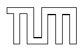

Nächste Seite: Inhalt Inhalt
0mm

| Aufgabensteller: | Prof. Dr. Thomas Huckle |
| Betreuer: | Prof. Dr. Rüdiger Westermann |
| Abgabetermin: | 17. Januar 2005 |
München, den 16. Januar 2005
(Leo Wandersleb)
In der vorliegenden Arbeit soll der Ansatz von Matthias Müller, David Charypar & Markus Gross [2] fortgeführt werden und durch eine neuartige Datenstruktur der Speicherbedarf bei gleichzeitiger Vergrößerung des Simulationsgebiets verringert werden. Während das Programm zur vorliegenden Arbeit bei höheren Bildraten mit unter 15MB RAM auskommt, konnte das Simulationsgebiet auf das etwa hunderttausendfache gesteigert werden.